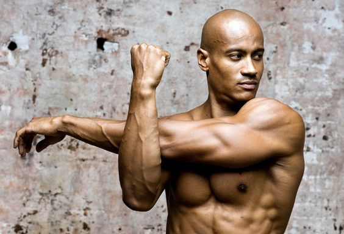
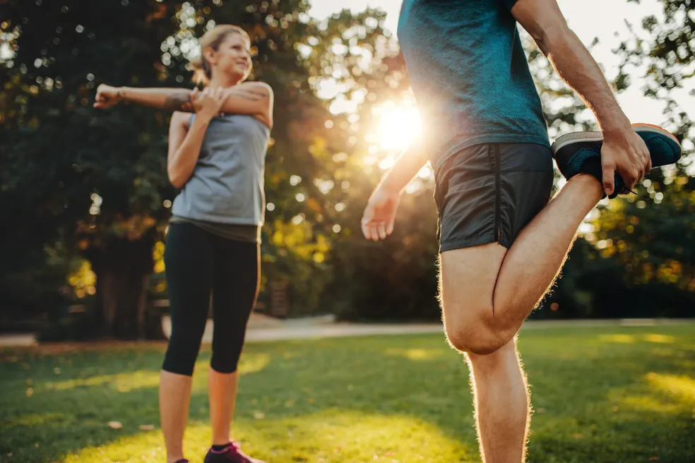

Contextualizando para quem não sabe, alongamentos são pequenos exercícios que servem para aumentar a flexibilidade e mobilidade de um certo músculo ou região corporal.
Nos tópicos abaixo teremos dicas para algumas dúvidas recorrentes sobre esse tipo de exercícios:
Pré ou Pós treino?
Os alongamentos são divididos em dois grupos: o estático e o dinâmico
-
Estáticos
Os alongamentos estáticos, como o nome indica, consistem em movimentos feitos de forma que se permaneça alguns segundos numa mesma posição. É mais indicado após os treinos ou exercícios físicos, uma vez que torna os músculos mais relaxados, dando uma sensação de alívio. Segundo Gusmão (ortopedista), no alongamento estático, alonga-se o músculo até uma determinada posição, que deve ser mantida durante 30 segundos, e o objetivo é alongar até o limite do confortável.
Um exemplo de movimento estático é o alongamento dos músculos do quadril, em que a execução consiste em sentar no chão com as pernas abertas, sem dobrar nem levantar os joelhos do solo, abaixar o corpo para a frente, deslizando as mãos pelas pernas ou esticando os braços para a frente.(EU ATLETA, globo esporte)
-
Dinâmicos

O alongamento ativo é realizado idealmente antes do exercício e usa a amplitude do movimento para fazer o alongamento de algumas fibras musculares que estão resistindo e desacelerando o movimento. São feitas repetições mais rápidas de movimentos. Ele reduz o enfraquecimento muscular, perda de mobilidade e má postura, comuns com o avanço da idade. Oferece mais força, flexibilidade muscular e resistência e é um tipo de alongamento que é realizado com mais intensidade, velocidade e dinamismo. Por esse motivo, costuma ser executado antes de uma sessão de treinamento.(EU ATLETA, globo esporte)
Como alongar corretamente?
De acordo com David Gusmão, é muito importante não sentir dores durante o alongamento. O movimento deve proporcionar uma sensação, mas não dor. Também é preciso respeitar os limites do corpo e o tempo de adaptação à rotina de exercícios. Veja algumas dicas que o médico ortopedista selecionou para ajudar na execução dos movimentos de forma correta:
1. Esteja atento se há dor durante o alongamento, pois é muito importante não sentir dores durante o exercício;(EU ATLETA, globo esporte)
2. Deve-se sentir o músculo que se está alongando especificamente para aquele determinado tipo de alongamento. Por exemplo, se está alongando o adutor, no meio de coxa, então, deve-se sentir o músculo interno de coxa trabalhando. Sentir dor na articulação significa que o músculo não está alongando e que a articulação pode estar se machucando;(EU ATLETA, globo esporte)
3. É importante seguir os limites do seu corpo. Caso sinta uma resistência ou dor, não continue até o fim e não force o movimento;(EU ATLETA, globo esporte)
4. Sempre consulte e/ou esteja acompanhado por um profissional durante a prática de exercícios e alongamentos, este poderá definir os melhores movimentos para cada um de acordo com limitações e objetivos.(EU ATLETA, globo esporte)